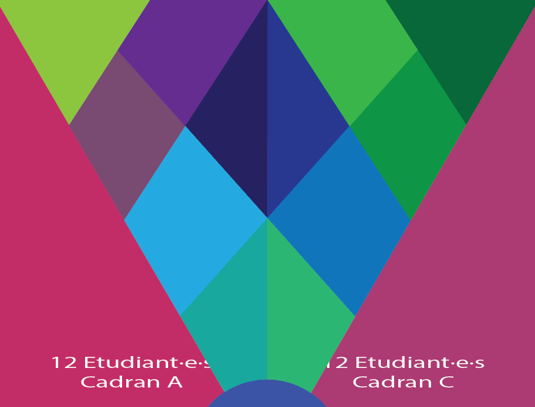

Affiche MMI ✦
Affiche collaborative présentant les disciplines et le département MMI

Description du Projet
Cette affiche était un projet de quelques jours, réalisé avec Illustrator. L'objectif était de créer une affiche qui représente les différentes disciplines enseignées au sein du département MMI, tout en respectant certaine contraintes visuelles. Par exemple, j'ai du travailler en monochrome! Notre cadrant représentait le cursus création, et mon thème personel était l'illustration.
Méthodologie
Pour garder un visuel cohérent avec les consignes individuel, nous avons choisi de partir sur une couleur de base commune, le violet MMI.
Pour représenter l'illustration, j'ai choisi de représenter la création d'une illustration. Pour cela, j'ai recréé l'UI d'un logiciel de dessin (sur le modèle de Krita), avec une main dessinant au stylet sur une tablette graphique.
L'illustration dans cette tablette est une illustration vectorielle personelle, que j'ai adapté au consigne et au thème afin de gagner du temps, le délai de réalisation étant très court.
Les étapes
La base, division des zones de travail personnelles, mon illustration.




Les Résultats & Impact
L'affiche n'est pas encore finalisée et imprimée, mais elle servira à promouvoir le département MMI lors de la journée portes ouvertes l'année prochaine, et sera affichée dans les locaux de l'IUT. C'était un projet rapide, mais qui m'a permis de travailler sur une illustration plus poussée que d'habitude, et de me confronter à des contraintes graphiques fortes.